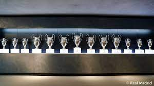
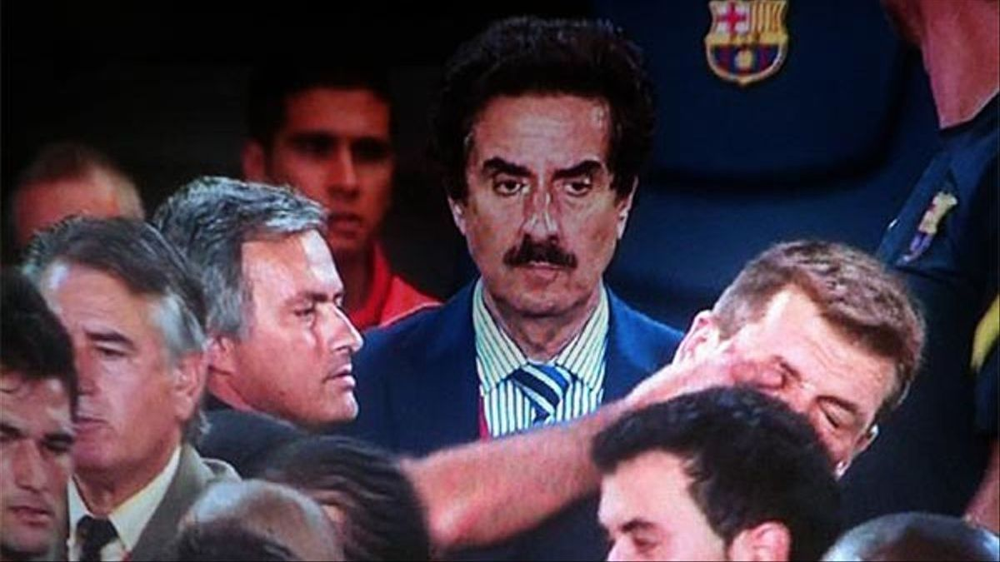

En los primeros años de esta nueva década llegaron a las vitrinas los tres trofeos conquistados por el
Real Madrid de José Mourinho. El más destacado, la Liga de la campaña 2011-12, que ganaron con un récord
de 100 puntos, la mayor cifra jamás lograda hasta entonces en la historia del campeonato, y 121 goles.
También levantaron ante el Barcelona una Copa del Rey y una Supercopa de España.

Simplemente
Real Madrid CF
En junio de 2013, Carlo Ancelotti llegó al Real Madrid. El italiano conquistó cuatro títulos en el
conjunto blanco. El primero de ellos fue la decimonovena Copa del Rey, venciendo en la final al
Barcelona. El 24 de mayo de 2014 los blancos volvieron a levantar la Copa de Europa. Con su victoria por
4-1 ante el Atlético se llevaron la Décima. Ramos, Bale, Marcelo y Cristiano certificaron el triunfo.
En la segunda temporada de Ancelotti llegaron dos nuevos éxitos: la Supercopa de Europa frente al
Sevilla y el primer Mundial de Clubes del Real Madrid ante el San Lorenzo. De esta forma, se cerró el
2014 con cuatro títulos. En junio de 2015, Rafa Benítez regresó al club en el que se formó para dirigir
al conjunto blanco. En enero de 2016, Zidane se convirtió en entrenador del primer equipo tras una
trayectoria de leyenda como jugador. Su primera temporada se cerró con la conquista de la Undécima ante
el Atlético en Milán.

Mourinho demostrando deportividad
La segunda campaña del técnico francés estuvo repleta de triunfos. El Real Madrid ganó la Duodécima, y
se convirtió en el primer equipo en repetir título en la época Champions. Junto a la máxima competición
continental, también se ganaron la Liga 2016-17, la tercera Supercopa de Europa y el segundo Mundial de
Clubes, que se disputó en Japón. La temporada 2017-18 se empezó levantando una nueva Supercopa de
Europa, al ganar al Manchester United, y con la décima Supercopa de España. En diciembre de 2017 llegó
un nuevo Mundial de Clubes, y se batió el récord de títulos en un año con cinco.
El 2018 también forma parte de la leyenda madridista gracias a la Decimotercera, lograda ante el
Liverpool en una en una final que se jugó en Kiev, y al séptimo título de campeón del mundo, conquistado
en los Emiratos Árabes Unidos ante el Al Ain. El 2020 comenzó con la 11ª Supercopa de España, que se
ganó al Atlético de Madrid en Yeda (Arabia Saudí). En julio, el equipo dirigido por Zidane consiguió en
el Alfredo Di Stéfano la 34ª Liga madridista.